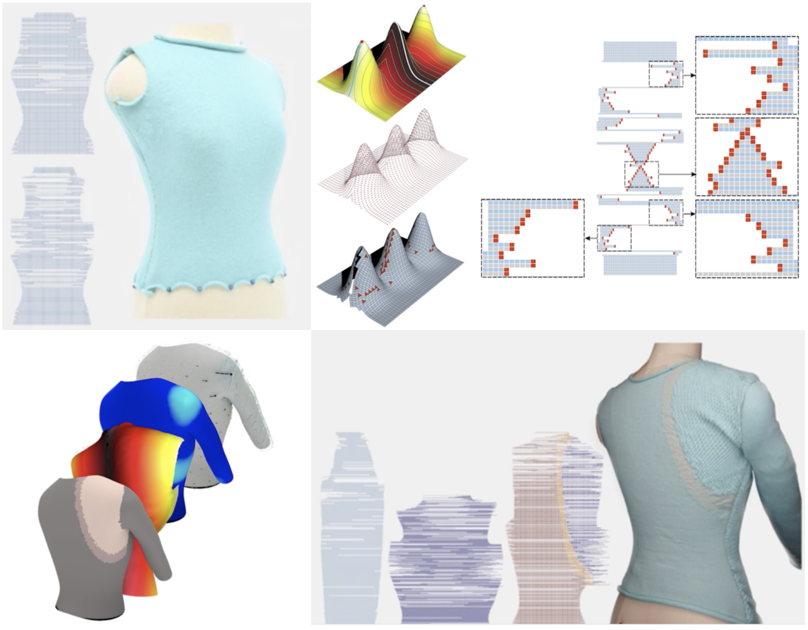
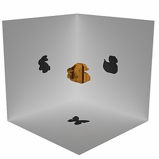
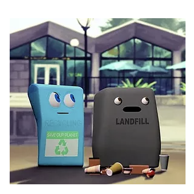

ABOUT ME
I am a fourth-year Ph.D. student in the Department of Computer Science at Boston University, advised by Prof. Emily Whiting in Shape Lab. I received my B.A. degree in Mathematics from the University of California, Berkeley. During my senior year, I was honored to work with Prof. Carlo H. Séquin at the EECS department on geometric modeling. Prior to joining the Shape Lab, I was fortunate to work with Prof. Chenfanfu Jiang at the SIG Center for Computer Graphics at the University of Pennsylvania on fluid simulation.
My research interests include physics-based animation, digital avatar, character animation and human movement for computer graphics. CV
My research interests include physics-based animation, digital avatar, character animation and human movement for computer graphics. CV
News: I will be visiting the Digital Manufacturing Lab at the University of Manchester (UoM) with Prof. Charlie C.L. Wang for 2023-2024 academic year.
PUBLICATIONS

Knitting 4D Garments with Elasticity Controlled for Body Motion
Zishun Liu, Xingjian Han, Yuchen Zhang, Xiangjia Chen, Yukun Lai, Eugeni L. Doubrovski, Emily Whiting, Charlie C.L. WangACM Transactions on Graphics (SIGGRAPH 2021), Vol.40, No.4, Article No.62 (16 pages), August 2021
RESEARCH
Research Intern, Creative Intelligence Lab, Adobe Research
Project: Machine Learning based Character AnimationSupervisor: Jun Saito, Ruben Villegas

Research Intern, SIG Center for Computer Graphics, University of Pennsylvania
Project: Micropolar APIC Method for Turbulent Fluid Supervisor: Prof. Chenfanfu Jiang
This project aims to simulate Turbulent Fluid with Micropolar model based on APIC transfer, improving the visualization detail of turbulent fluid simulation and creating a more animated and energetic rotational flow.

Research Assistant, Department of EECS, University of California, Berkeley
Project: Sculpture Design and Math ModelsSupervisor: Prof. Carlo H. Séquin
In this project, we employed various CAD tools (Maya, Blender, Rhino) for the procedural generation of 2-Manifold sculpture geometries, capturing and modifying the features of sculpture work from ceramists (Eva Hild and Charles O. Perry) to create more generalized functions for the design of 2-manifold free-form surfaces.
OTHER PROJECTS

EchoVerse NFT
The next-generation social simulation game in the metaverse. This project aims create NFT collection of island models with different decorations and designs.

Shadow Arts
This project aims to generate a 3D printable model from given 2D shadow images so that its shadow best approximates the provided input when viewing for orthogonal viewpoints.Reference: [1] Shadow Arts [Mitra and Pauly 2009]

HearstCAVE 3D Reconstruction
In this project, we aim to digitalize the collections from the Hearst Museum of Anthropology, by constructing and reproducing the 3D visualization of the exhibits and to store the models in geometric data format. In the process, we adopt photogrammetry to scan and model the exhibits from the museum to make the models reproducible in the digital version. MapsReo
MapsReo is a location-based social application that provides people in the community a safe environment to hang out, it is also a guide of local living style. With two core functions - Pin-up and Team-up, people can express their feelings with any type of media content within a legal restriction and create Ad hoc activities to get together. 
Animation: Recycling
The UC Berkeley Undergraduate Graphics Group (UCBUGG) is a passionate group of students who want to introduce our fellow peers to the art of creating a 3D-animated short film. Short animation film - Recycling - introduced two trashcans reacting to people throwing recycling cans and bottles into landfill, to alert people to distribute garbage reasonably.